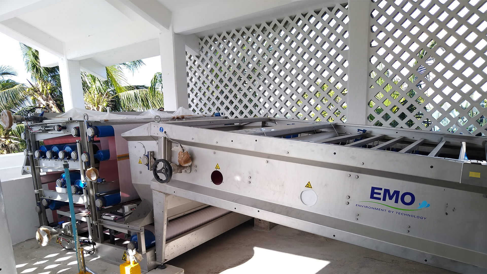

Continuous sludge dewatering through progressive mechanical pressure — the OMEGA belt filter press series combines high capacity, low energy consumption, and fully stainless steel construction for consistent results at WWTPs of any size.

The Belt Filter Press (BFP) is a continuous mechanical dewatering machine that progressively reduces sludge water content. The process occurs in three distinct zones: gravity drainage, wedge pressure zone, and high-pressure roller zone.
The result is dewatered sludge cake with dry solids content of 15–25%, ready for final disposal, composting, or co-incineration.
The OMEGA belt filter press line offers models for every operating scale, with belt widths from 0.5 to 3.0 m and 100% stainless steel construction.
High-performance belt filter press for municipal and industrial sludge. Robust general-purpose solution with excellent value for money.
| Belt width | 0.5–3.0 m |
| Flow per unit | Up to 12 m³/h |
| DS output | 15–25% |
| Construction | SS 304L / 316L |
High-pressure model for difficult-to-dewater sludge. Higher cake DS content and lower polymer consumption per processed tonne.
| Belt width | 1.0–3.0 m |
| Applied pressure | High pressure |
| DS output | 18–28% |
| Application | Industrial sludge |
Sludge is conditioned with cationic polymer to agglomerate solids and facilitate liquid-solid separation.
Sludge distributed over the top belt loses free water by gravity — pre-dewatering phase.
The two belts converge, forming a wedge that progressively compresses the sludge, expelling more water.
Decreasing-diameter rollers compress sludge between belts to extract maximum moisture and produce the final cake.
Dewatering of primary, secondary, and mixed sludge for final disposal
High-volume industrial sludge dewatering — food, paper, chemical industries
Sludge cake with 20–25% DS suitable for controlled composting programs
High DS cake reduces weight and volume for transport to thermal treatment
Dewatered sludge for land application with biosafety protocols
OMEGA CC unit — thickening and dewatering in a single compact machine
Our technical team sizes the ideal OMEGA Belt Filter Press model for your flow, sludge type, and DS targets.